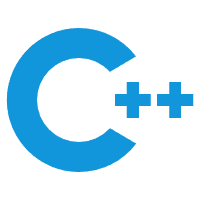
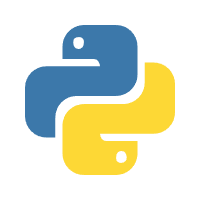

ABCD(AboyCode) support:
simply and powerfully
helps you
Coding Online
Online compilation, and study CS.
ABCD offers a wide range of tools and features
to help you master a computer language
faster, easier, and more efficiently.
With ABCD, you can easily make your file
using C/CPP,Python,lua,lisp,go,javaHTML, CSS, JavaScript
and more languages
ABCD offers a wide range of tools and features
to help you master a computer language
faster, easier, and more efficiently.
With ABCD, you can easily make your file
using C/CPP,Python,lua,lisp,go,javaHTML, CSS, JavaScript
and more languages
C CPP PYTHON JAVA LUA R LISP HTML CSS
JavaScript GO Rust D C# MATLAB Ruby PHP
Perl Logo Scratch Hy TypeScript Julia Eiffel
ABC Ada Bash F# SQL
JavaScript GO Rust D C# MATLAB Ruby PHP
Perl Logo Scratch Hy TypeScript Julia Eiffel
ABC Ada Bash F# SQL
Duff' device.cpp••••
#include<iostream>
#include<ctime>
|
using namespace std;
int main() {
int *to,*from;
std::default_random_engine eng;
std::unifom_int_distribution u;
eng.seed((time(NULL)));
int count=u(eng),n=(vount+3)/4;
switch(count%8){
case 0:do{ *to = *from++;
case 3: *to = *from++;
case 2: *to = *from++;
case 1: *to = *from++;
}while(--n>0);
} return 0;}
#include<iostream>
#include<ctime>
|
using namespace std;
int main() {
int *to,*from;
std::default_random_engine eng;
std::unifom_int_distribution u;
eng.seed((time(NULL)));
int count=u(eng),n=(vount+3)/4;
switch(count%8){
case 0:do{ *to = *from++;
case 3: *to = *from++;
case 2: *to = *from++;
case 1: *to = *from++;
}while(--n>0);
} return 0;}
flask.cpp••••
from flask import Flask,request,jsonify
from flask import render_template
from gevent import pywsgi
from datetime import datetime
app = Flask(__name__)
@app.route('/<string:pg1>/<string:id>')
def api(pg1, id):
if(pg1=="api"):
if(id=='xxx'):
from.binding.python.xdbSearcher\
import XdbSearcher
client_ip = request.headers.\
get('X-Forwarded-For', request.remote_addr)
try:
def searchWithFile():
dbPath = "./ip/data/ip2region.xdb"
searcher = XdbSearcher(dbfile=dbPath)
Log In